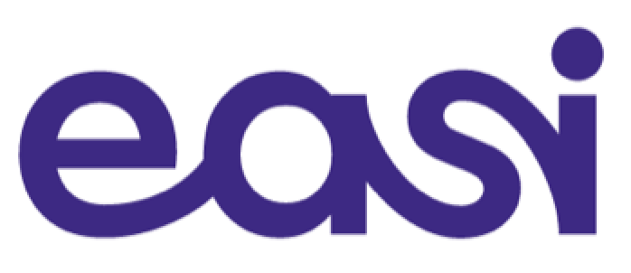
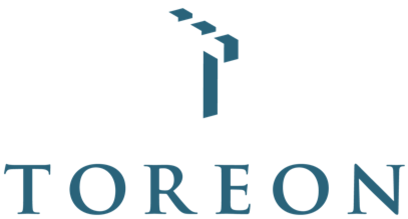
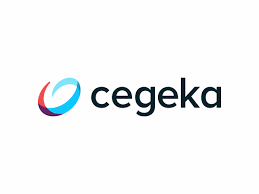
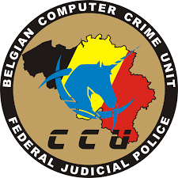
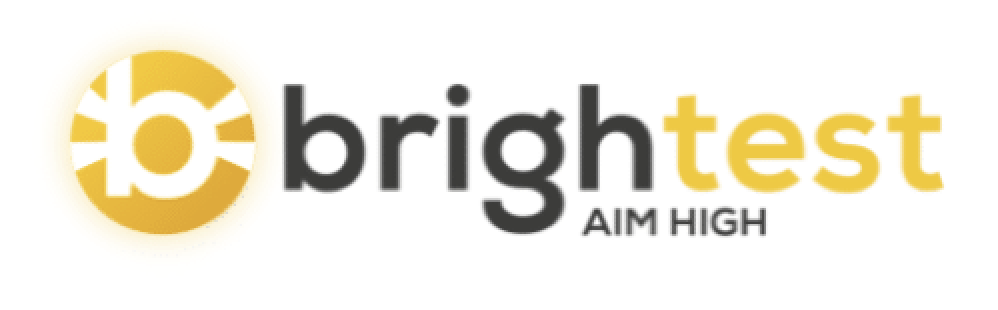
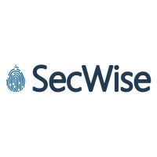
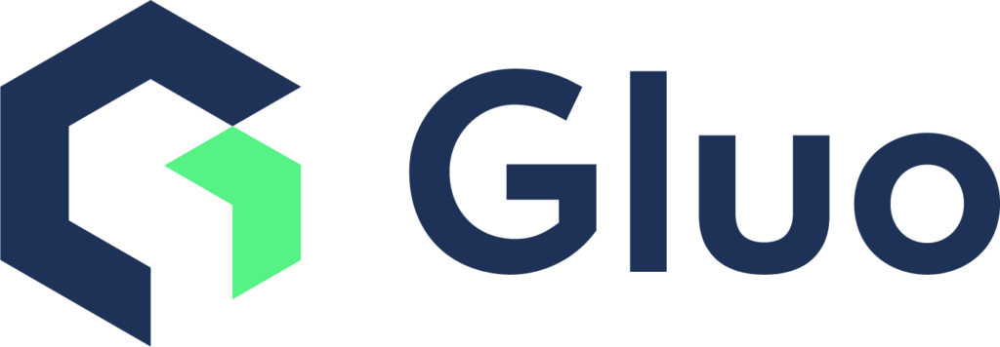

Seminaries
Easi: Microsoft Cloud: Azure & Intune
Tijdens dit seminarie gaf Easi een introductie tot de mogelijkheden van de Microsoft Cloud, met een focus op Microsoft Intune (Azure). In het seminarie werd getoond hoe deze tools kunnen worden ingezet voor cloudbeheer, beveiliging en device management binnen bedrijven.
PXL G410 — 12 maart 2024 | 8:30 – 11:00

Toreon: Ethical hacking
Tijdens het seminarie van Toreon kregen we een introductie tot ethical hacking aan de hand van realistische challenges. Samen met ervaren penetration testers onderzochten we kwetsbaarheden in applicaties en gingen we vervolgens in de code op zoek naar de oorzaken.
PXL G410 — 19 maart 2024 | 08:30 – 12:30

Cegeka: The Challenge of Open Source
Tijdens dit seminarie gaf Cegeka inzicht in het gebruik van open source binnen IT en de bijbehorende risico's. Er werd toegelicht hoe deze risico's worden beheerd en waarom een bewuste omgang met open source cruciaal is voor moderne softwareontwikkeling.
PXL G412 — 23 april 2024 | 09:00 – 11:00

Politie: Digitaal onderzoek: forensics, cybercrime, crypto-assets en data-analyse
Tijdens dit seminarie gaf de RCCU (Regionale Computer Crime Unit) een inkijk in haar werk binnen de federale gerechtelijke politie, met een focus op digitale forensische onderzoeken en het veiligstellen van digitaal bewijs. Ze bespraken ook de uitdagingen van moderne cybercriminaliteit, zoals ransomware, encryptie en de snelle evolutie van technologie.
PXL G414 — 7 mei 2024 | 10:00 – 12:00

Brightest: Pentesting - inbreken om te beveiligen
Tijdens dit seminarie kreeg ik een duidelijk beeld van hoe penetratietesten helpen om kwetsbaarheden op te sporen vóór kwaadwillenden dat doen. Aan de hand van voorbeelden leerde ik hoe ethische hackers denken en welke stappen, tools en technieken bij een pentest komen kijken.
Corda 7 - CC714 — 5 november 2025 | 13:30 – 16:00

Secwise: Cyber security with a focus on identity
Tijdens het seminarie van Secwise kreeg ik inzicht in cybersecurity met een focus op identity en toegangsbeheer, en hoe cruciaal dit is voor de beveiliging van systemen. Ik leerde hoe aanvallen vaak gericht zijn op identiteiten en waarom sterk identity management essentieel is om risico's te beperken.
Corda 7 - CC713 — 12 november 2025 | 13:30 – 15:30

Equans: Ethical hacking
Tijdens het seminarie van Equans over ethical hacking kreeg ik inzicht in hoe aanvallers denken en hoe systemen op kwetsbaarheden worden getest. Ik leerde hoe ethische hackers beveiligingslekken opsporen en helpen om systemen beter te beschermen tegen echte aanvallen.
Corda 7 - CC712 — 26 november 2025 | 13:30 – 17:30

Gluo: DevSecOps
Tijdens dit DevSecOps seminarie leerde ik hoe je software in de cloud kan ontwikkelen en deployen met security als integraal onderdeel. Via labs werkte ik met tools zoals Terraform, Docker, Kubernetes, Trivy en Nikto om kwetsbaarheden te detecteren en op te lossen in verschillende fases van het deploymentproces.
Corda 7 - CC712 — 3 december 2025 | 13:30 – 17:30
